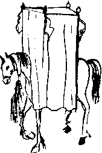

İşte şimdi yine, sanki bütün İstanbul’un dilinde marifetleri dolaşan o değilmiş gibi, üç yoldaşı ile şarap partileri yapa yapa tüm Balkanları geçerek Macaristan’a girmişlerdi.
Hwace de geride kalamayacağı için, yaşlı haline bakmadan sefere konulmuştu: Her gün Osman, Sultan, Hami ve Utarid hakkında tutulan düzenli raporları okuduktan sonra, iki katır arasına kurulu tahtırevanında uyuklaya uyuklaya yola devam ediyordu, insanların kitap sandığı sandığı (bu söz sanatına ne dersiniz sayın Kırımçak? O.F.M) ve hizmetkârın haftada bir muhteviyatını yenilediği sandığın içindeki nefis ince kilerinden çöpleniyor, dışarıdan bir tek su istiyor, hiç yemek getirtmiyor, günlerce dışarı çıkmıyordu. Dolayısı ile, yemeyen yestehlemez fehvâsınca tuvalete bile gitmiyordu. Bunu hizmetkârları dahil bütün ordu böyle biliyordu. Halbuki Hwace kurnazı bu düzeneğin altyapısını taa İstanbul’da iken hazırlamıştı. Sultan,
“Hwacem zafer müyesser midir?" diye sorunca,
“Sultanım, katırlar –af buyurun– âdem gibi yestehlerse niye olmasın?" demişti.
Bu cevap bütün müneccimler tarafından günlerce tartışılmış, umutsuzluktan, mahalle üfürükçülerine bile haber salınmıştı. Hwace’nin kendisi ise bir daha bu konuda ağzını açmamıştı:
“Konuşayım da sultanım, bu kehanetin kutu, berakatı mı kaçsın? Olmaz!”
İşte şimdi Hwace Efendi tahtırevandaki tahtalardan birini kaldırarak keyifle def-i hacet ediyor, kimse artık bu mucizeyi umursamıyordu bile. Halbuki seferin ilk günlerinde, daha Küçük Çekmece yakınlarındayken kendisini ziyarete gelen Hami’yi at üzerinde bekletirken bu işi yapmıştı: Mucizeyi ilk fark eden at uşağına yüzlerce altın veren Hami, bunu kendisi görmüş gibi sahiplenmiş, kanıtı musâhib külahına koyarak sultana koşmuştu. Hwace’nin ne zaman aklına gelse, maşallah saat gibi olan vücudu sayesinde her gün öğleden sonra muntazaman geliyordu, kıkır kıkır kıkırdardı. Kendisini zeki zanneden Hami’yi necâset hamalı yapmıştı! Kik...kik...kik...
Ta ki o öküz Berke bu işi “bilmeden” bozuncaya kadar. Bir gün ufak bir yiyecek paketi gelmiş, “Hwacem ebedi orucunu bunun ile bozsun, katı irademdir” fermanı ile birlikte tebliğ edildiği için, Hwace mırın kırın etmeden ve herkese göstere göstere nefis soğuk etleri gövdeye indirmişti. Sonra da olan olmuş, haberler yine birkaç yüz altın kazanmak isteyen at uşağı tarafından Hami’ye ulaştırılmıştı, Hami de müneccimleri toplamış, yine bir halt edememişler, birinin aklına “âdem falına varmak” gelmiş, ilk gördüklerine soruyu sormaya, alınacak cevabı yorumlamaya karar vermişlerdi. Münecciman çadırı önünden geçen bir adamı durdurmuşlar, bu da tesadüfen Alanya taraflarından bir Tahtacı Yörük çıkmış, hiç düşünmeden,
“De ha var git işine gidi oğlu gidi! Üç aydır âdem gibi fışkıladı katırlar, ona ses çıkarmadınız da karınlarını bozunca mı kötü oldu?” demiş, Hami dahil tüm münecciman utanmış duruma da aymışlardı.
Berke ise ileride tarihe Tilki Sultan Berke diye geçeceği zaman bu lakabı çoktan haketmiş olacaktı. Hwacesine bir oyun oynamış, biraz müshilli kaz göğsü göndermişti. Hwace'de biraz akıl olsa, o karnını tutarak kaçmak zorunda olduğu ders günlerinin çokluğunu tahattur eder de yine ayardı ama aymadı.
Bu zevzeklikler, orduda başını alıp yürüyen ve yol sıkıntısını dağıtan, askerleri güldürmeye yarayan bu tuhaf dedikodular, şimdi Rumeli Beylerbeyi olan Tırnakçı Utarid Paşa denen garip adamın umurunda bile değildi. Hatta bu cihan umurunda değildi. Uzun boylu, kumral, endamlı, yakışıklıca, hayattaki tek arzusu bütün cihanı kendi demir yumruğu altında tutmak bile olmayan, bunu yalnızca gerekçe göstererek sürekli savaş halinde olmak isteyen bir kişiydi. Savaş meydanlarında mutlu oluyor, savaş bittiği zaman gerçek bir yeise düşüyordu. Aslında savaşı da ancak daha büyük zevklere vesile olduğu için seviyordu. Henüz herhangi bir savaş meydanında bir çarpışmaya girdiğini gören olmamıştı. Savaş meydanlarında dolaşarak ölü insan bedenlerinin güzelliğini seyretmek, sonra da savaş esirlerinin öldürülüşüne nezaret etmek gibi hoş şeyler kendisini biraz oyalıyorsa da, her güzel şey gibi bunların da sonu geliyordu. En kızdığı şey düşmanın yenilgiyi kabul ettiği, kaçmaya başladığı anlardı. Böyle zamanlarda küfretmekten boğulacak hale geliyor, kaçan düşmanlarına lanetler okuyordu. Haraç vesaire gibi yöntemlerle savaştan uzak durmaya çalışanlara da tepkisi aynıydı. Gilan ve Mazenderan seferleri sırasında haraç ödeyerek kurtulduğunu zanneden aşiretleri, kasabaları kedi, köpek ve farelerine varıncaya kadar tamamen ortadan kaldırmakla meşhurdu. Emrindeki bütün askerler istisnasız ondan nefret ediyor, o da bu nefreti körükleyecek işler yapıyor, mesela eline bir ok yay alarak uzaktaki askerlerinden birkaçını vuruyor, bundan dolayı kendisine karşı harekete geçen askeri birlikleri daha önce inanılmaz paralar vererek hazırlamış olduğu diğer birliklere kırdırıyor, olup bitenleri de merkeze “isyan eden asilerin tenkili" olarak sunuyordu. İran seferi sırasında ordusunda sürekli çıkan “isyanlardan dolayı askerlerinin hemen hemen yarısını “maalesef” yitirmişti.
Nereden geldiğini kimse bilmiyordu. Kendisini eskiden tanıyan tek bir kişi bile yoktu. Orta Avrupa dolaylarından veya Rusya’da bir yerden gelip “ihtida” ettiği yolunda zayıf bir rivayet vardı ama bu kaşına gözüne bakılarak verilmiş bir yargı da olabilirdi. Herhangi bir dinle ilgisi olduğu hiç kesin değildi. Ona göre, herhangi bir din, ancak insanları savaşa sevk edebildiği, onları mümkün olduğunca savaşta tutabildiği sürece makbuldü. Duvduvani denen kitaptan kendisine bahsedildiğinde, dönem dönem her dinde bir miktar “umut” kıvılcımı olduğunu anlamıştı. Türkçeyi aksansız, mükemmel konuşurdu ama hangi vilayetten olduğunu bilen de yoktu. Herhangi bir vilayet ahalisinin “hemşehrimiz” diye kendisini sahiplendikleri de vaki değildi.
Osmanlı devleti hizmetindeki kariyerinin epey bir kısmı Anadolu’da geçmişti. Duvduvani Efendi’nin kitabında “Recai ayaklanmaları” olarak geçen isyanlar onu çok mutlu etmişti. O günlerde yanında yöresinde olanlar, paşanın yüzünde tebessüme benzer birtakım kas kımıltıları gördüklerine yemin ediyor ama kimseyi pek inandıramıyorlardı.
Utarid Zülfü Paşa insanüstü bir yaratık filan değil, düpedüz insandı. Gerçeklik anlayışı ve önem verdiği şeyler, diğer insanlara göre biraz farklılaşmıştı, o kadar. Para, seks, mevki, toprak, din gibi kavramlardan haberi vardı, bunları bilmiyor değildi. Yalnız, o başka bir tercih yapmış, savaşı bunlar adına kullanmaktansa bunları savaş için kullanmak yolunu seçmişti. Onun realitesi buydu. İnsanlara ait olan başka duyguları da vardı, mesela gelişkin bir sanat anlayışı... Başka insanları sevmek, onlar için bir şey yapmak, fedakârlıkta bulunmak gibi “insani” nosyonları da hiç eksik değildi. Bilakis, başkalarına göre haddinden fazla gelişmişti. Paşa, kelimeyi bilse kendisini bir hümanist, bir aşırı insansever olarak tanımlamakta hiç güçlük çekmezdi. İnsana ait hiçbir şey, onun gönlünü bulandırmıyordu, İnsanların öldüğü zaman çürümelerine, topraklara karılıp gitmelerine üzülüyor, yüreği sızlıyor, sevdikleri ölünce hemen onlardan vazgeçen vefasız insanlardan tiksiniyordu. “Külden küle, tozdan toza” diyen papazlara özel düşmanlığı da aslında buradan geliyordu. Evet, Utarid Zülfü Paşa kadar insansever biri olmasındı. Ama burada yine bir tercih yapmıştı: Gidici insanları değil, kalıcı insanları seviyordu. Bunun da uzun, gayet mantıklı açıklamaları vardı.
Paşanın tüm zati eşyası diğer insanların ölü vücutlarından devşirilmiş hatıralardı: inci gibi genç kız dişlerinden boy boy tespihleri, bebek kafataslarının gayet sanatkârane işlenmesiyle yapılmış fincan takımları, muhteşem kütüphanesini oluşturan binlerce kitabın değişik renklerdeki insan derilerinden yapılma gayet muntazam ciltleri, insanların uzun kemiklerinden yapılma oymalı-kakmalı müzik aletleri, daha büyük kemiklerinden iskemleleri, tabureleri... Velhasıl, üzerinde ve çadırında, kalıcı insanlar ile ilgili olmayan hiç, ama hiçbir şey yoktu: Bebek saçları ile doldurulmuş, işlenerek yumuşak güderi haline getirilmiş genç kız derisinden yatak, giydiği, yaşlı kadın saçından mamul ak gömlek, savaşlarda kuşandığı, binlerce insanın el ve ayak tırnakları ile kaplanmış ve kendisine pullu dev bir balık görüntüsü veren zırh, her şey... Her şey... Paşa bütün bunları bir iki çırağının yardımıyla kendisi yapıyordu. Bütün sanatlı dokunuşlar, onun hassas kalbinin ve deha seviyesindeki beyninin eseriydi. Tüm bu aksamından dolayı paşa hazretlerinin hususi bir mezarlık kokusu vardı. Bu koku bir yere sahibinden önce ulaşır, insanların “Utarid Paşa geliyor” diyerek çil yavrusu gibi dağılmasına neden olurdu.
Mehlika Sultan’ın kocası işte böyle bir tipti. Abram Paşa Sarayı’na geldiği zaman haremde kendisine ayrıları odaya sinmiş olan bu ceset kokusu aylarca çıkmadığı için Mehlika Sultan odayı tamamen iptal ettirmişti. Birbirlerine karşı sureta saygılı davranmışlardı. Utarid Paşa’nın kadın-kız veya başka herhangi bir canlı yaratıkla ilgisi olmadığı için Mehlika’nın, kapısı önüne üç sıra olarak dizdiği silahşor haremağalarına o gece veya sonra bir iş düşmemişti. Yalnız Mehlika Sultan Berke’yle Osman’ı durumdan ve paşanın ne menem bir adam olduğundan haberdar etmiş, “sık dişini” cevabını alınca “gelin, siz sıkın" demişti.
İkisi bir gece kalkmış, Hami ile beraber gelmişler, mideleri bulanarak, içleri kalkarak Paşa ile bir akşam yemeği yemişlerdi. Paşanın ne zıkkım yediği bile belli değildi. Ertesi gün Berke, Utarid’in yanına birkaç bin adam katarak önden sefere çıkmasını ferman etmişti. Bu adama bakınca kendinden iğreniyor, şimdiye kadar irili ufaklı gerekçelerle öldürttüğü yüzlerce insandan dolayı kendisiyle bu yaratık arasında ilintiler kuruyor, geceleri ağlayarak yatağından fırlıyor, “ben Utarid değilim, olamam” diye çığlıklar atıyor, sultanlıktan, sarayından, insanların toprak alıp vermek kaygısıyla giriştikleri, türlü şekillerde haklı göstermeye çalıştıkları –ve tuhaf bir şekilde insanoğlu bu kadar zeki geçindiği halde her çağda başarılı oldukları– gelmiş geçmiş tüm savaşlardan nefret ediyor, ikrah getiriyordu. Neydi? Niye sultanlar, krallar toprak almak istiyorlardı? Daha çok vergi alabilmek, daha zengin olmak için. Bu vergiyi ne yapıyorlardı? Daha büyük, düzenli ordular kurmak için. Bunlar ne işe yarıyordu? Daha çok toprak/vergi edinebilmek için. Liste böyle uzayıp gidiyordu...
Sultan, Testiyye’yi, bohçacıları ve müteferrikaları temizlediği gün duyduğu o muhteşem güçlülük duygusundan tamamen utanır olmuştu, içini derin bir pişmanlık duygusu kaplamıştı. Sonra bir gün Duvduvani’den de vazgeçmişti! Bu hesapça, sefere şahsen çıkması, hatta sefere çıkılması için var olan gerekçeler pek zayıflamıştı. Hiziplerin dedikodusu bir baskı unsuru olmaktan çıkmıştı. Yeniçeriler kontrol altındaydı, Utarid Paşa ile pişdara çıkmalarından sarf-ı nazar edilen ve İstanbul’da bırakılan birlikler, mesela kapıkulu süvarileri nasıl teşekkür edeceklerini bilmiyorlardı. Askerlerinin bu adamı sevmek ne söz, ondan nefret ettikleri anlaşılmıştı. Padişah, bunları bir gün Osman’a anlattı. Vazgeçmişti, gitmiyordu. Osman gülümsedi:
“Sultanım canavarı uyandırdıktan sonra yarı yolda bırakamazsın, bazen yangını yangınla söndürmek gerektir ”
“Ne demek canavarı uyandırmak? O leş yiyici köpekten korkan onun gibi olsun, hemen yarın birkaç bostancı gönderip it gibi boğdururum!”
“Sultanım, Utarid’den bahseden kim? Ceng ü cidâl kapısı aralık kalmıştır. Biz bugün o kapının eşiğindeyiz, böyle iki cihan arasında kalmak olmaz. Ya kapatıp geri evimize döneceğiz ya açıp gireceğiz!”
Berke dayatıyordu:
“İstemem... Kimsenin evine girmek istemem... Kan istemem, çekilirim, uzletnişîn olurum, devlet istemem, para da istemem, eve dönelim Osman... Sen git Osman..."
Osman Hulûsi kestirip attı:
“Hayır, ordunun başında sen de geliyorsun. Bizim bu hareketi yapmamız lazım. Zaafa verirlerse maazallah mülk elden gider. Eve dönmek için önce evden gitmek gerek, hem de sağlamca gitmek gerek, yoksa dönecek ev de olmaz...”
“Olmasın!... gitsin... Gitsin, benim değil mi, mülküm değil mi? Mülk de gitsin ev de... toprak istemem... vergi istemem..."
Osman, padişahın zannettiğinden de zor durumda olduğunu anlamıştı:
“Hayır, mülk senin değil, reaya da senin değil, beraya da senin değil... Bu oyunu sen başlattın sen bitireceksin ama ne zaman biteceği senin elinde değil, sana düşen, bu müddet zarfında bek basmaktır, musiki durmadan durmamaktır...”
Saflar dalgalanmış, karman çorman olmuştu. Osman Hulûsi, Mehlika Sultan, Utarid Zülfü ve Şeker Hami tuhaf bir şekilde aynı saftaydılar, savaş istiyorlardı. Padişah asla istemiyordu, ordusundaki yeniçeriler istiyor, tımarlı ve kapıkulu süvarileri istemiyor, vüzeranın çoğu istiyor, bazısı istemiyor, Hwace Efendi ise ortada bulunuyordu. Ona boşuna Câmi’-üs Siyaseteyn, yani “iki siyaseti şahsında toplayan" dememişlerdi, hangi taraf ağır basacak gibi olursa, terazinin hafif kefesini daha da hafifletmeye her an hazır, fedakâr bir siyaset piri idi.
Osman Hulûsi’nin Venedik balyosu aracılığıyla aldığı haberler kötüydü ve kısa bir süre sonra olayların akışıyla bu haberler doğrulanacaktı. Alaman ve Kuzey Macar caniplerinde bir hareket türemiş, kendilerine İstavrozi diyen bir tarikat yüzlerce Alman prensliğine yayılmış, tek tek bütün prensleri ikna etmişti. İmparator Rudolfo cenapları bu önüne geçilmez hareketi durduramayacağını anlayınca kardeşi Hernando Kral’a sefer açma yetkisi vermişti. Kuzey Macaristan hâkimi olan Hernando Kral sefer mefer istemiyordu. Topun ağzında ilk o vardı. “Şu Türkün yayasını süvarisini üzerine sıçratmak” istemiyordu. Biraz ağırdan aldı. Bizim Duvduvani’nin adını kaydetmeye lüzum bile görmediği, hem Şeker Hami’den hem de Hwace’den esintiler taşıyan Başpiskopos-u Lâin ile, her nedense adını dikkatle kaydettiği, herhalde oraların Utarid Zülfü’sü, General Yohan Zudrig Mars ise savaş istiyorlardı: Tuna üzerinden ince donanmayla fakat tüccar şekline soktukları birlikler göndererek Peşte’de, din ayrımı yapmayacak kadar eşitlikçi olduklarını vurgulayan ufak bir katliam yaptırmışlardı. Budin Beylerbeyi İshak Paşa, kaçmakta olan “tüccar” gemilerinden birkaçını yakalatarak bunun cevabını vermeye çalışmış, ama bu kadarı Osmanlı tarafını memnun etmediği gibi, Fransa dahil bütün Avrupa’da “Türkler” hakkında pek kötü bir izlenim bırakmıştı. Papa hazretleri de
[kadın olan mı? Hah... hah... l.K.]
durumdan yararlanarak hemen bir Haçlı seferi örgütlemeye başlamış, lstavrozi’lerden büyük destek görmüştü. Osman haklıydı. Kapı aralıktı. Üstelik Avrupa’da kapı aralanınca İran’da da iyi kapatılmamış bir pencere açılıyordu. Bu toprağın insanlarının oldum olası her türlü cereyandan korkmalarının da herhalde böyle tarihi nedenleri vardı.
Teslis’in daha çok Nutfe-i Suat tarafı, öbür tarafların da kafa sallaması eşliğinde şöyle düşündü: “Galiba Doğu’ya olan pencereni tam kapamadan Batı kapısını aralayamıyorsun, sonuç hep böyle oluyor, peynirini üretmeyi bilmediğin Hollanda’nın denizcilik tecrübesinden de haberdar olamıyorsun...”
Ok yaydan, işler şirâzesinden çıkmıştı. İstanbul hiziplerinin sırf kendi çıkarlarını kollamak için ortaya attıkları sefer lafı, bunun daha kışın ortasında açıktan ilan edilmesi ama bir şekilde Budin Paşası’na tuhaf bir emrin gönderilmesi, Alamanları adeta bir deli iş yapmaya davet etmişti. Oradaki savaş ve insan eti düşkünleri, bunu “Türk Kâfiri”nin aymazlığına vererek Peşte’deki güzel düşünülmüş, iyi de kotarılmış mini katliamı becermişlerdi. Şeker Hami’nin divan kâtiplerinden birine yüklü bir rüşvet vererek yazdırıp nişancı tarafından çekilmesi gerekli tuğrayı daha da büyük bir rüşvet yardımıyla ekleterek İshak Paşa’ya gönderttiği sahte ferman, Paşa’ya Alamanları işkillendirecek bir iş etmemesini, sefer lafının sırf ayaktakımını yatıştırmak amacıyla kasıtlı yayıldığını, bir şaşırtmaca-i sultaninin söz konusu olduğunu, asıl seferin baharda İran üzerine olacağını söylüyordu! Saldırıda bulunmamasını ama serhaddi korumasını, gözünü dön açmasını, bir sakatlık olursa dakika fevt etmeden padişahın cedlerinin ruhu için kendisinin tepeleneceğini söyleyen asıl ferman ise ancak bir suret olarak ahkâm defterlerine kaydedildiğinden, çok sonraki tarihçiler Budin Beylerbeyi’nin bu sallapatiliğini çok eleştirmiş, hatta bir tanesi pek ileri giderek, İshak Paşa’nın Alaman’dan para alan bir Macar devşirmesi tohumu olduğunu yazmıştı. İshak Paşa’nın Gürcü olduğunu ve devşirme olmadığını adı gibi bilmesine rağmen, iyi bir hikâyenin önüne olguları dikmek gibi bir çiğlik yapmamıştı tabii bu tarih dehası, (kim, kim bu ses? Bu sesi ne yaparım ben?)
Bu Peşte katliamının İstanbul’da duyulmasıydı işte padişahı çarnaçar Avrupa yollarına döken. Kırım Tatarlarının da gelip buluşmasıyla ordu daha da dev bir ejderha haline dönüşmüş, Macaristan’ın yemyeşil ovalarında kıvrıla kıvrıla gidiyordu. Sultan Berke sefer sırasında o kadar zayıflamıştı ki, verdiği okkalardan ikinci bir Berke çıkmasına ramak kalmıştı. Uzun boynu iyice ortaya çıkmış, uyumadığı için gözleri kan çanağı gibi, çıtırtıya kılıcını çekerek cevap veriyordu. Kimse huzura çıkmaya pek cesaret edemiyor, Osman ise bazı geceler yoldaşlarından da gizli geliyordu. Böyle bir sefer sırasında ve serhaddin berkitilmesinin gerektiği bir zamanda, Berke’nin gönderdiği iki çavuşun, tamamen bigünah olan Ishak Paşa’yı boğması, savaşı basamak yapmak isteyen vüzerada da pek bir mecal bırakmamıştı.
Kızıl sakallarını İstanbul’dan beri kırkmadığı için Berke’nin yüzüne garip bir hal gelmişti. Sakallarına iri siyah inciler dizdirmişti. Bunlara yakından bakanlar her birinin kafatası şeklinde oyulduğuna yemin ediyorlardı. Saçları ise, Osmanlıların tepelerinin arkasında bıraktıkları ecel perçemi hariç, her iki günde bir itina ile kazınıyordu.
Hami Şeker’e gelince: Hami hayatından bıkmak üzereydi. Sultanın en güvendiği adam olarak, ustura zehirli mi değil mi diye önce onun kafası tıraş ediliyordu. Hem böyle bir tür esir haline gelmesinden hem de sultanın ona karşı tavrının gittikçe değişmesinden muztarib, kurduğu düzenin dağılmasının an meselesi olduğunu hissediyordu. Çelikten olduğunu zannettiği sinirleri de pek iyi durumda değildi. Hele “yol meşakkati,” bazen söylediği yalanlara lanet ettiriyordu. Niye daha basit, daha olabilecek bir fesada kalkışmamıştı? Kitap, sultanın burnunun dibinde sarayın kütüphanesindeydi, atası Sultan Zemberek zamanında Mekke Şerifi Abuzeyd Tarabin tarafından, çabuk kurulup aniden boşalması ile ünlü sultanı belki biraz olsun oyalar diye, hediye kabilinden İstanbul’a gönderilmişti. Yalan dolanla bir alakası olmayan Zemberek, kitaba bir göz atınca o sayfada ne varsa onu okumuş, Kelile ve Dimne masalları gibi bir şey zannetmiş, kimin ne gönderdiği unutulmasın diye ilk sayfasına bir not düşmüş, kendi mührünü basmış ve kitabın saray kütüphanesine alınmasını emretmişti. Bir daha da on bir yıllık saltanatında sayfasını bile açıp bakmamıştı. Zavallı Tasviri’nin daha geldiğinin ikinci saatinde kitap dolaplarının birinin bozuk dengesini düzeltmek amacı ile kullanılmasının buna neden olduğunu bazı raviler rivayet etmekteydiler. O zamanın hafız-ı kütübü Şemsi Bereket Efendi, kalınca bir şey aranırken masanın üzerinde bunu bulmuş, cildi alelâde deve derisi, içi minyatürsüz bir şey olduğunu görmüş, tesadüfen açtığı sahifede de Sultan Hüsrev devrinde Hollanda’ya peynircilik öğrenmeye gönderilen birinden bahsedildiğini görünce,
“İllallah bu ilim-tahayyül yazarlarından! İsabet! Nereden de akıllarına geliyor? Hüsrev’miş, ne münasebet!” diyerek, kırık arka bacak yerine kitabı kullanıvermişti.
O sıralarda henüz sultanın musâhibi değil de sarayın arabacı atölyesindeki marangozlardan biri olan Hami Şeker, birkaç kez gidip Duvduvani'yi almak için şansını denemişse de pek aksi bir adam olan hafız-ı kütüb, kayıtlarına bakıp öyle bir kitabın kütüphanede olmadığını söylemiş, Hami’nin “sultan istiyor” ısrarı üzerine de,
“Git o zaman, sultandan, kitabı istiyorum diye bir kâğıt getir” demişti.
Hami uzun süre kıvrandıktan sonra sultanın kahvecibaşısına yalvararak, sultanın kütüphanesinde bir meddahlık kitabı gördüğünü, ama kütüphanecinin vermek istemediğini söylemiş, bir ufak pusula istirham etmiş, Berke de o pis elyazısı ile “mezkûr kitap verile” yazmış, Hami kütüphaneye gitmiş, pusulayı göstermiş, Tasviri’nin kitabını istemişti. Hafız-ı kütüb olacak adamın iyice aksiliği tutmuş,
“Evet, yazıyı tanımasına tanıyorum, bir görenin unutmasına imkân var mı? Ama hangi mezkûr kitab? Benim kaydımda kuydumda böyle bir kitap yok. Sultan burada olduğunu düşünüyorsa, ferman etsin, açık açık yazsın, 'Tasviri Duvduvani adlı kitabın bulunması matlubumdur’ diye yazsın da arayalım, ama bak söyleyeyim, o zaman saray kütüphanesi allı ay kapanır!” demişti.
Bunun üzerine Hami marangozluğu şimdilik bırakarak Şark’a, Utarid Zülfü Paşa’nın ordusuna gitmiş ve o tatlı diliyle paşayı kandırması uzun sürmemişti.
“Paşam” demişti, “siz ki bu kadar huzur, sükûn ve barış meftunu olun, insancıkları bu hayat gailesinden kurtarmaya çalışıp durun, gece gündüz uyumadan kendi elcağızlarınızla ölümsüzlüğe doğru bir gıdım daha yaklaşmalarını sağlayın da bunun kıymeti bilinmesin? Paşam, yanlış anlamayın ama marangozhaneye bir koçu arabası ısmarlamaya geldiği zaman muhterem zevcenizi, Mehlika Sultan’ı gördüm... O ne ten, hiç tabaklanmaya ihtiyacı yok, o ne gülüş, o ne inci dişler, tornaya sokmasanız da olur, 'o ne fettan gece karası saçlar... Bir de kara gömleğiniz olsa fena mı olur? Değiştire değiştire giyersiniz. Şimdi öküz Berke’ye deşeniz ki ‘ben karımı çok seviyorum, izin ver de onu sanat ile yoğurup ebedi kılayım,’ anlamaz. Siz niye bu mülkün sultanı olup da böyle zarif emirleri kendi kendinize vermeyesiniz, ya da Hami bendenize ihale etmeyesiniz, şapırt... ohh...”
Velhasıl, paşanın ağzından girip burnundan çıkmıştı. Utarid Zülfü, uzun Mazenderan gecelerinde Hami’yi dinlerken bu projeyi aklına yatırmaya başlamış, daha fenası başlarda umursamadığı Mehlika Sultan’a âşık olmuştu. Bir an önce visaline kavuşmak istiyordu menkûhasının. Böyle bir güzelliğin şu yalancı âlem-i misalde beş dakika bile vakit geçirmesi haramdı!
Hami müstehcen bir lisanla Mehlika’nın özellikle dayanıklı vücut parçalarını anlattıkça Paşanın başı dönüyordu, kendisini çıldırtmak için yapıldığını bildiği halde,
“Höst...höst... de ha siğilli kurbağa sen git ananın kaval kemiklerinden sipsi yap..!” diyor, ama ertesi akşam dayanamıyor,
“Sultanım nasıl Hami, tırnakları pembe mi, beyaz mı?” diye soruyordu... Hami de,
“Sultanım ne beyazı, ne pembesi? Turunç gibi, kızıl, kızıl” deyince, Utarid zihninin bir köşesinde bu tırnakları zırhının üzerine, sol memesinin altına kalp şeklinde işlemeyi kuruyordu. Hami’nin, zırcahil olan Utarid’e, eline geçen bir Şehname nüshasını Kitab-ı Duvduvani olarak göstermesi ve Duvduvani’yi bir fal kitabı olarak tanıtması, orada ne kadar Zaloğlu Rüstem resmi varsa paşanın kendisi olarak göstermesi, bu ikna sürecinde önemli olmuştu.
Paşa bazen itiraz ediyordu:
“İyi ama Hami, buradaki ben hep tuhaf işler yapıyor; sırtında at-katır taşımaktan başka bir şey yaptığı yok, suratı da bana pek benzemez, bu bayağı kara palabıyıklıca bir Mazenderan dalbudağı...”
“Ah sultanım, sizin sultan olmanız lazım ki bu kitap istikbali nasıl değiştirerek yazıyor göresiniz Şu anda sizi, daha sultan olmadan ama siz suretinde tasvir etse başınıza gelecek olan belalardan saklıyor...”
Paşa “yine resimleri olacak mı?" diye sorunca Hami onu sonunda ikna etmişti:
“Sultanım bu yazıların her biri zaten Hami kuluna ayan beyan bir resimdir, ben bunca şeyi nereden bakıp da söylerim? Size de ol dem görünse gerektir...”
Sonra Hami kendisini, Acem Şahmın sarayından esir alınmış bir musâhib olarak İstanbul’a göndertti, simsiyah bir sakal bırakarak suratını değiştirdi.
Hami’nin Hwace’yi “ikna” edişini ise tarif etmeye ne hacet? Sultanın yeni musâhibi olarak el öpmeye gittiğinde hemen kulağına fısıldamıştı:
“Kutb-u zaman efendim, Utarid Paşa kulunuz selam eyler ve iki destinizi badelbus der ki ‘yakında hurûcum vardır. Acaba hwaceler hwacesi efendim, Berke gibi benim de hwacem olmaya tenezzül eder mi?’
“İlahi evladım sual mi? Mülk bizden bunu bekler. Biz kim gelirse onun Hwacesiyiz, onun hizmetkârıyız, kendi şahsi fikirlerimizden bu kadar da fedakârız” diye cevap vermişti Hwace.
Hwace o gece sevincinden uyuyamamış, müstakbel sultanın o kadar adam varken kendisinde karar kılmasına şükürler etmiş, eline meşaleler alarak o meşhur ışık kılıcı semahını yapmış, dönmüş durmuştu:
“Ne demek Hwace olmayı kabul etmek ay oğul? Tabii, tabii ki onu zaten yapmak mülken, aklen, ve dinen vazifemiz, ama sen Hwaceni öyle mırıl mırıl dudak kımıldatarak senin gelişini sessizce bekler mi belledin? Biz o Hwaceyiz ki senin gelişin artık bizden sorulur. İstical gerektir. İstical! Bu gençler vaktin kıymetini anlamaz.”
Böyle diyerek ve fesadın tüm sorumluluğunu üstlendiğini zannederek ilmi çalışmalarına başlamıştı bile. Sonradan Hukuk Çelişkileri ve Mensûh Olması İktiza Eden Kavânîn adıyla sadeleştirilecek olan dev bir çalışmaya girişmiş, Şark’ta doğmakta olan Utarid yıldızı rejiminin hukuki ve ideolojik temellerini kendisine mahsus fıkıh ilkeleri ışığında hazırlamaya başlamıştı. Kitabım bir yandan kâtiplere temize çektiriyordu. Ama bu demek değildi ki cin Hwace bütün yumurtaları bir sepete doldurmuş, kaderini hiç tanımadığı Utarid ve Hami’nin kaderine raptetmiş, öyle masum ceylan kuzusu gibi bekliyordu! Kitabı ikinci sayfadan başlıyordu. İthaf sayfasını ise Utarid tahta çıktığı gün dolduracak, öyle sunacaktı Hwace. Yok, işler tersine giderse bu sefer Berke öküzüne ithaf eder, evdeki bulgur ile idare ederdi. Hwace’ye dolambaçlı, gıllıgışlı, düzenli düzenekli iş olsun! Ona “var mısın?” diye sorulması bile abesti. Kambersiz düğün nerede görülmüştü? İhanet ve fesad Hwace’nin o nurani kalbinin kan basarken çıkardığı bir fısıltı ikilisi gibiydi: ihanet ve fesad, ihanet ve fesad...ih-fes, ih-fes, ih-fes...
Şeker Hami bunları düşünce evreninde ziyaret ettikten sonra kafasına inen bir şaplakla kendisine geldi. Berberin “iş bitti” işaretiydi bu. Çok karmaşıktı işler çok... Bir sürü şey yolunda gitmemişti, musâhib olarak sultana sokulma fikrini akıl ettiği güne lanet ediyordu. Altın kafeste bir bülbül bile olamamıştı, şitah çalısı dikenlerine takılmış yağlı bir tırtıldan başka bir şey değildi, lşaya kırk birden o pasajı okuduğu güne de ayrıca lanet ediyordu. Yehova çölde mirtil, sedir, zeytin ve şitah ağaçlarını seçilmiş çocuklarına vermişti, hoş... pek hoş! Peki tırtıllar Yehova’nın nesiydi? Onlar da onun yaratığı değil miydi? Geceleri düşünde küt gagalı bir hankan kuşu Hami’yi yakalıyor, diğer soydaşları ile birlikte şitah ağacının dikenlerine cart diye geçiriyordu. Hami hemen ölmüyor, azaplar içinde kıvrana kıvrana yenmeyi bekliyordu. Böylece hem yakalanmış hem de, çöl sıcağında olmasına rağmen buzdolabına konmuş oluyordu. Ölmeyen tırtıl Hami, güneş altındaki altmış dereceye rağmen bozulmadan taze, hani deyim yerindeyse “canlı canlı” kalmış oluyordu. Ordu artık yavaş yavaş kuzey Macaristan’a girerken bu hankan kuşunun düşlerindeki yüzü de gittikçe belirginleşiyordu.
Bu rüyayı üst üste beş on gecede ancak görmüştü... Hankan süzülerek geliyor, gagasını Tırtıl Hami’nin minik yeşil gözlerinin taa dibine kadar sokuyordu. Yine de görmek-seçmek pek mümkün olmuyordu, çünkü sivri şitah dikenleri görüşünü kesiyor, gaganın hızlı hareketleri görüntüyü dumanlıyor, bazen gözlerine sıçrayan kardeş tırtıl kanları Hami’yi tamamen kör ediyor, bu engellerden kurtulmak, kanları göz kapaklarından silkmek ve Hankan’ın yüzünü görmek için yaptığı kıvranmalar –Tırtıl Hami’nin elleri yoktu ki gözlerini silsin– ciğerlerini deliyor, delik ciğerlerinden dolayı çığlık bile atamıyordu. Otağ-ı Hümâyûnun içine kurulmuş küçük bir çadırda yatan Hami, uyandığında ter içinde kalmış oluyordu. Berke “yattığım yerde şeker dilinle bana masal anlat” diyerek bu düzeni bulmuştu. Kendisi geniş, rahat yatağına geçiyordu, Hami’yi de çadırının içine iki akağa sokuyor, bu garip çadırın tunçtan kopçalarını ilikliyor, öylece bırakıp sultanın yatak odasından taşra çıkıyorlardı. Hami küçük çadırının örme zırhtan yapılmış “kumaşına açılmış bir ufak delikten Berke’ye masallar, fıkralar, tuhaflıklar anlatmaya başlıyor, bazen bu ağız deliğinden Berke’nin gittikçe korkunçlaşan yüzünü şöyle yarım buçuk görebiliyordu.
Rüyaları da herhalde bu hayatın bir aksi olmalıydı: Çöl sıcağında küt gagalı hankan kuşu yaklaşıyor, yaklaşıyor, Hami sevinçli, çünkü yenme sırasının kendisine gelmesi ihtimali yüzde otuz üç küsûr. Sadece üç tırtılcık kalmış. “Acaba hangimiz önce" diye düşünüyor, Tırtıl Hwace mi (ufak minik bir kavuğu var, oradan biliyor Hwace olduğunu), Utarid Paşa mı, yoksa kendisi mi? Maalesef Hankan yeni şeyler, böcekler getirip takıyor dikenlere, sırtlarında yapraktan bohçaları ile karafatmalar, ufacık çelik miğferleriyle –çünkü seferdeyiz– ışıl ışıl ateşböcekleri suretinde müteferrikalar, “homran” suratları ile küçümsenen cırcırböceği şeklinde Çingeneler! Sonra boynuzlu gergedanböceği suretinde mert paşalar, Ishak Paşa, Sabit Niyazi Paşa... Tırtıl Hami kıvranarak yekmıh’taki arkadaşlarına yalvarıyordu:
“Yeter artık fesadda fesaddaş, yolda yoldaşlarım yeter artık kurmayalım, çevirmeyelim bu dolabı, anlayın artık, biz kurdukça yeni ‘enam’ geliyor, bizim azabımız ebede kadar mı sürecek?"
Tırtıl Utarid beyaz ipeğimsi bir koza örmüş etrafına. Kozanın tam ortasından geçen diken Utarid’e de zarar vermiş mi Hami göremiyor. Ama Utarid memnun, her yeni gelen yaratığa zevkle bakıyor, kozanın içi –kan mı yoksa başka bir şey mi belli değil– bir sıvı ile doluyor, doluyor... Utarid boğulacak. Utarid’in umurunda değil, kozayı dişleri ile kesmek yerine daha sağlam, daha sağlam, pek sanatkârane bir surette örüyor ha örüyor... Tırtıl Hwace diyor ki:
“Hami Bey oğlumuz sabırlı olsunlar, yakındır bizim de fecrimiz yakındır, hem sonra ben hankanları ne yaparım? Hankan biliyor mu Hankan? Ki o bir siyaset dahisinin karşısında?”
Sonra bir gün muhteşem bir şey oluyor, ipeğini almak için Utarid Paşa’yı alıp kaynar bir kazanın içine atıyor Hankan. Dikende çakılı olmasına rağmen bilinç kuşu gider ıraklara ıraklara, kanat çırparak kazanın üstüne varıyor, Utarid memnun, Utarid mesud... Sonra daha da muhteşem bir şey oluyor evet... evet... Bütün hayatı boyunca ektiği fesad tohumlarının yeşermesini bekleyen Hwace de ulaşıyor tırtıllar cehennemine. Son saniyeye kadar hâlâ sayıklamaları, hezeyanları duyuluyor:
“Gaga biliyor mu gaga, ben gagayı ne yaparım, gırtlak biliyor mu gırtlak ben gırtlağı ne yaparım...”
Tırtıl Hami sevinçli, inanılmaz sevinçli! Yarın artık bu azaptan kurtulma zamanı. Bunu biliyor çünkü etrafta hiç yenecek tırtıl kalmadı... Çünkü epeydir dolap çeviremiyorlar. Hahh... hahh... hahh... diye gülüyor Hankan, kıpkırmızı kan çanağı gözleri, dazlak bir kafası, upuzun kızıl sakalları var... Hah... hah... Tırtıl Hami bu azat müjdesi ile hafif bir ımızganıyor... Sonra birden müthiş bir vaveyla kopuyor... Neredeyse şitahtan kurtulacak kadar güçlü bir debelenmeyle silkiniyor... Vakti... vakti geldi mi? Heyecan içinde... aman aman, el aman... Bütün ağaç, bütün ağaç baştan aşağıya Alaman ve Macar kurtçukları ile dolu... Yüz binlerce var... Şitahın dikenleri zaten onları öldüren... İşkence olsun diye değil, onları öldürmek için kızıl sakallı hankan-ı hanakin ve diğer hankanlar getirip getirip çakıyorlar... “Bunları yemesi bir asır sürer” ve “yandım ya Lusifer” diyerek uyanıyor... Dışarıda mehteran sabah taksimine başlamış...
Bazı günler Sultan Berke ile aynı anda çığlıklar atarak, Berke “Yandım Allah" diyor, uyanıyorlar... Kim kimin işkencecisi, kim zalim kim mazlum, karmakarışık, at izi it izine karışmış, hiç belli değil... Sultan artık çok sevdiği için, gümüş renkli, ince ama sağlam kromdan yapılma bir zincir ve tasma ile dolaştırıyor Şeker Hami’yi. Bunu da kendi yaptı Hami. Sultan,
“Sıkıldın mı Hami?” deyince
“Evet sultanım böyle... böyle” diyemediği için,
“Hami kulunuzun boynuna tasma takıp da dolaştırsanız sıkılmaz, öyle azat kabul etmez bir zincirli kölenizim" deyince, Berke,
“Hay aklınla bin yaşa ulan Şeker, herkes de görsün bunun böyle olduğunu” diyerek Hami’ye özel bir zincir taktırıyor. Hami’nin şafak atık ama ne yapsın yine dili belasına gitti okkanın altına.
“Ah dilim dilim, kesmesin başım keseyim dilim” diye aleni mırıldanıyor, sultanı sultan yapanın kendisi gibi heveskâr kullar olduğunu idrak ettikçe çılgına dönüyordu. Acıklı, ama en sevdiği şey, tasmasından tutularak ordu içinde dolaştırılması olmuştu!
“Bekri Ağa, tam zağar sayılmaz ama bir dolaştırın bakalım, seyretsin kulum âlemi” demişti Berke bir gün. Hami buna ağlamak ve ulumak arası bir tepki verince koskoca bir yeniçeri ortası, sultanın bu maskarada ne bulduğunu yavaş yavaş anlayarak kahkahayı basmıştı. Utarid’in buna hiç tepkisi olmamış, Hwace yine meşhur siyaset numaralarından birini yapmış, çift burgulu siyaseteyn taklasını atmıştı: Sultana dervişane bir hediye olarak, uşaklarının esir ettiği on dört on beş yaşlarında bir kâfir kızını, “bu da Hami Bey oğlumun" hamişiyle, yağlı bir kemik parçası eşliğinde göndermişti.
Hami yeni rolünü çaresiz kabul etmiş, dört bacaklı heyetinde dolaşıyordu. Bu zincirli gezilerden birinde Hami, Hwace’nin tahtırevanının yakınlarda olduğunu görünce havlayarak, ve bacaklarından birini havaya kaldırarak çişinin geldiğini ima etli, malum köpekler konuşmaz, kahkahadan kınları askerlerin şaşkın bakışları içinde seğirterek, Hwace’nin tahtırevanının katırlarca taşınmadığı zamanlarda yere bırakılmasından yararlanarak kaldırdığı bacağını tahtırevana dayadı, çakşırı-tumanı çözdü, zor bir durum olmasına rağmen taklidi uzun sürsün diye gerçekten bir güzel işedi, işin doğrusu askerler de müdahale etmedi... Hami bu müddet zarfında,
“Hwace düş gördüm, önce Utarid, sonra sen, en sonra ben” diyebildi, sonra da tasmasını çekiştiren askerler tarafından sürüklenerek götürüldü. Patavatsız bir askerin özür dilemek amacıyla langadanak tahtırevanın perdesini açması üzerine görünen acayip bir manzara, önce orada bulunanların sonra bütün ordunun ağzının bir karış açılmasına, hayretten çenelerinin düşmesine
[cut... cut... Hiç Osmanlı ordusunun
çenesi düştü denir mi? I.K.]
neden oldu. Perdenin gıcırdayan bir kapı olmaması, Hwace’nin heyecan içinde bulunması ve bu işi hep gözü kapalı yaptığı için fâşettiği manzaradan tamamen bihaber vaziyette aceleyle, “Tamam evladım ziyan yok it bu, hadi beni rahatsız etme, riyazet esnasındayım” demesi ise yarım saat içinde Berke ile Osman Hulûsi dahil herkesin kasıklarını tutuncaya kadar gülmesine yol açtı. Şair İhya İkmalin çok sonraları o unutulmaz dizelerle yad ettiği, malum şairler hassas olur, kalp diliyle söylerler, hadise aslında budur:
Bir sonbahar günüydü girdik Hilal-Haç Ovası’na
Üç yüz bin ruh tamamen müstezâd ve esendik
Biz üç yüz bin ruhçuk o gün o mukaddes ovada
Kasıklarımızı tuta tuta güldük doyasıya eğlendik
Osman Hulûsi pek yakında bu tip cıvıklıklar yapamayacağından tamamen habersiz, en çenesi düşük ozanlardan pireyi deve, habbeyi kubbe yapmakla meşhur Atik Peymani’ye ufak bir rica ile, Hwace şerefine dehşetli bir “zülbank" çektirdi ki meşhurdur, yarın öbür gün bir cönkte bulunması memûldur. Muhtasar bir şekli bervech-i âtidir:
“Allah... Allah... celil-i cebbar, zülcelâl... ya mûntakim ya kahhâr... Numan Çelebi’yi sürdüren, Niyazi Paşa’yı ot minderi yapan, İshak Paşa’yı boğmacaya uğratan, Utarid’i azdıran, müteferrikalan al sancaklar gibi göndere çektiren, bohçacıları bohçalatan, çalgıcıları çağıldatan, ortalıkta testi bırakmayıp kırdıran, arslanlar arslanı, kaplanlar kaplanı, lisanımızın bânîsi, hukuk dahisi, İt Hami’nin hamisi, tımarhane kaçkını, akıl fikir şaşkını, riyazet düşkünü Hwacemiz aşkına bir yuhh...”
Bu zûlbank ağızdan ağıza yankılana yankılana yine sultanın bulunduğu yerde, yani yürekte bulunan 44.568 yeniçerinin olduğu yöne geldi. Kasıklarını tutarak dalgalanan bir duvara çarptı. Yine sonsuzluk kadar sürüklenen bir sessizlikten sonra 44.567 yeniçerinin tek bir ağızdan haykırdığı soluk olarak geri yansıdı: Yuuuh... Yalnız çam gibi tek bir yeniçerinin Kuzey Macaristan’ın batan güneşini cepheden aldığı için kızıla kesilmiş dimdik ve müheykel sureti bakanların zihnine nakşoldu da kaldı. Bir tek ondan ses çıkmamıştı.